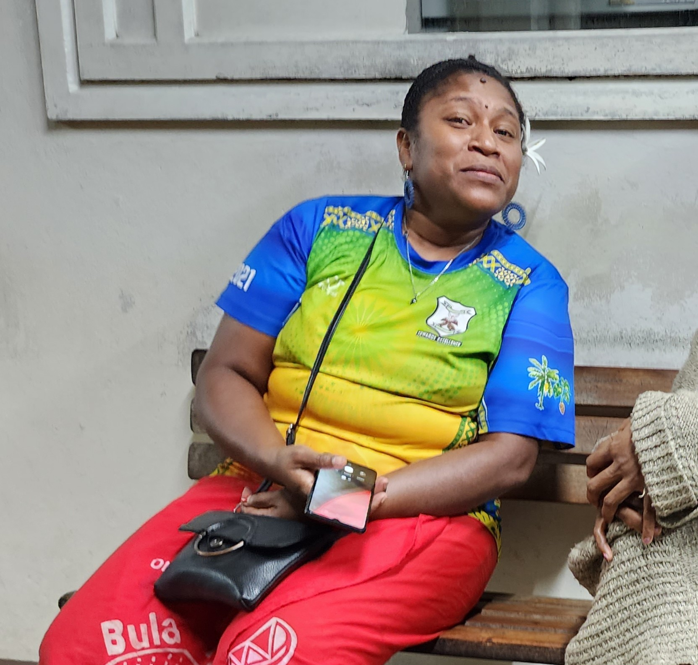
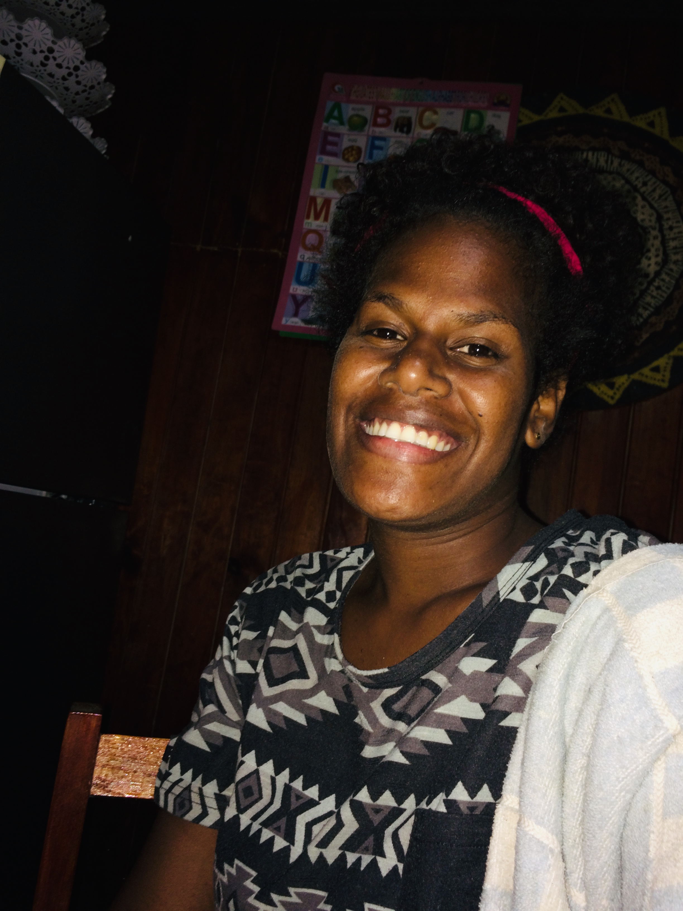
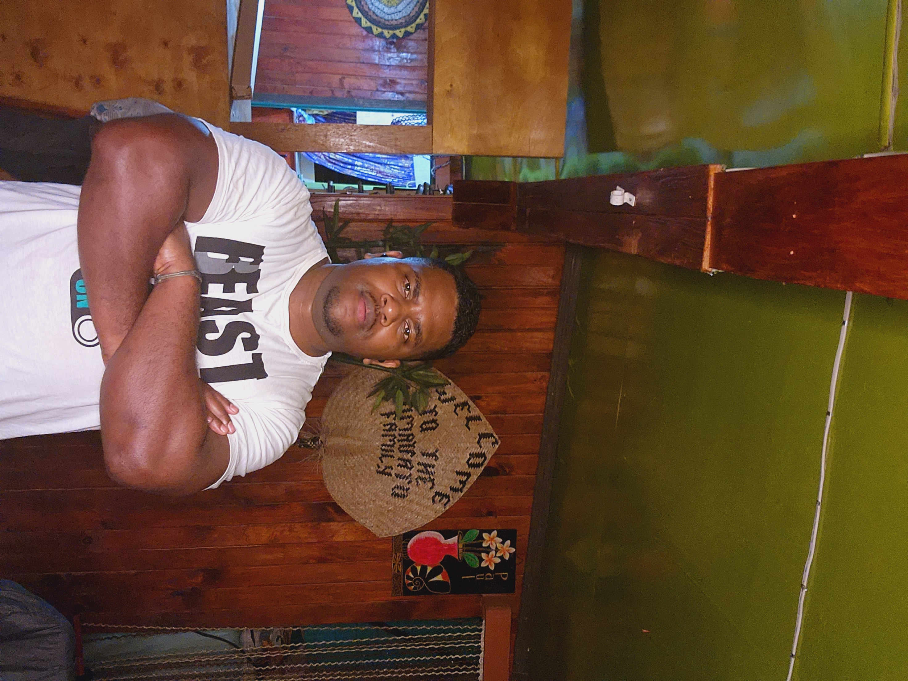

Api
Api is one of the important people in my family who holds the of being the father to his three children. He taught good values and make sure that he plays his role in the family being the provider
Api is one of the important people in my family who holds the of being the father to his three children. He taught good values and make sure that he plays his role in the family being the provider

Tila is the olders of three children. Being the olders shes considered to be the wises and the understanding one.

Nani is the middle child of the family. Always outgoing, and the most loving person you'd ever met.

Ife is the third Child, loving and always fun to be around with. Loves the gospel and loves to play rugby
Jeli, mother to three beautiful and handsome children. She is caring and protective of her children, and always willing to sacrifice anything for them.